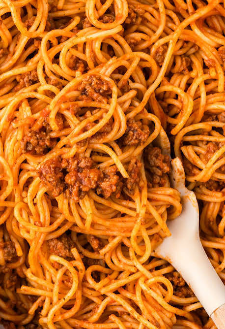

Spaghetti

Description
Spaghetti and meatballs is a classic Italian-American comfort dish consisting of long, tender pasta topped with
savory meatballs and a rich tomato sauce. It is famous worldwide for its hearty flavors and is a beloved staple
for family dinners..
Ingredients
- Spaghetti pasta
- Ground meat
- Breadcrumbs and egg
- Tomato sauce
- Onion and garlic
- Grated cheese and herbs
Steps
- Mix and shape the meatballs by combining the ground meat, breadcrumbs, egg, herbs, and seasoning, then rolling them into small balls
- Brown the meatballs in a large pan with a little oil until they are golden brown on all sides.
- Simmer in tomato sauce by adding the sauce, garlic, and onions to the pan with the meatballs and letting it cook until the meat is fully done
- Boil the spaghetti in a large pot of salted water according to the package instructions until it is al dente
- Combine and serve by tossing the drained pasta with the rich sauce and meatballs, then topping with grated cheese.
Home